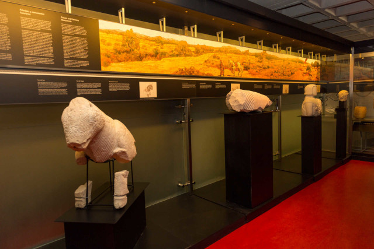
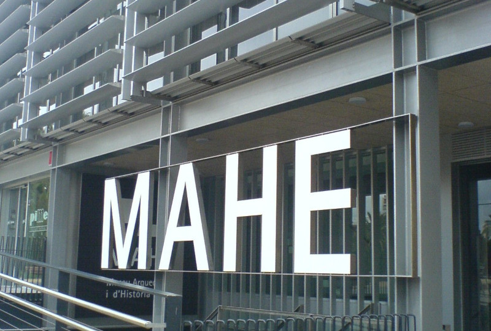

El Museo Arqueológico y de Historia de Elche (MAHE) es el museo de arqueología de la ciudad española de Elche. El MAHE se ha convertido en un referente arqueológico a nivel regional de gran importancia. Está situado en el interior del Palacio de Altamira (Alcázar de la Señoría), en el centro histórico de la ciudad, muy cercano a la Basílica de Santa María. Fue inaugurado el 18 de mayo de 2006 con una gran exposición sobre la cultura ibérica entre la que se encontraba la Dama de Elche, una de las piezas más significativas del arte íbero. El busto fue cedido temporalmente por el Museo Arqueológico Nacional durante seis meses (del 18 de mayo al 1 de noviembre de 2006).
Como exposición permanente el museo ofrece una visión general sobre las distintas etapas que han ido dándose en la ciudad, como son el Neolítico, el Eneolítico, la Edad del Bronce, la etapa íbera, el proceso de romanización, la época visigoda, el asentamiento islámico (actual emplazamiento de la ciudad) hasta llegar a nuestros días. Los restos arqueológicos proceden entre otros de los yacimientos de La Alcudia, del Parque de Elche (situado en uno de los jardines de la ciudad y que ha proporcionado importantes restos escultóricos) y de El Arenero de Monforte del Cid.
Se articula en dos secciones: arqueología e historia. La zona dedicada a la arqueología alberga el rico patrimonio de Elche desde el Neolítico hasta la Antigüedad tardía, siendo uno de los referentes más importantes el yacimiento de La Alcudia, emplazamiento de la ciudad antigua. La sección de historia se emplaza en el palacio del señor feudal, edificado sobre el antiguo sistema defensivo de origen musulmán. La fortaleza, estrechamente vinculada a la historia de la localidad, alberga el discurso museográfico correspondiente a la moderna ciudad de Elche, desde su fundación hacia el siglo X.